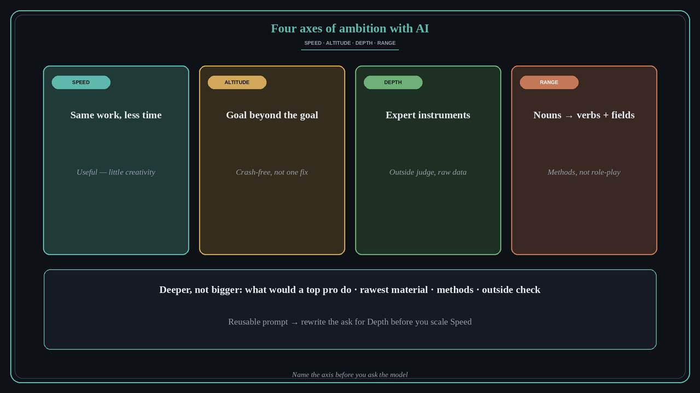

Ambition with AI has four axes: speed, altitude, depth, range
Source: Felix Rieseberg (@felixrieseberg), “How to be more ambitious: A tutorial for humans with models”
original post
What it claims
Felix Rieseberg (Claude eng lead) turns the vague rallying cry “be more ambitious with AI” into four concrete axes. Speed is the same work faster — useful, but little creativity. Altitude goes up in abstraction: ask for the goal beyond the goal (“keep our apps crash-free,” not “fix this crash”; redesign how leadership catches problems earlier instead of only filling the QBR deck). Depth insists on the instruments field experts use (databases, stats models), sets unreasonable targets, adversarially re-tests beliefs from raw data, and always uses an outside judge — never the model grading itself. Range replaces nouns with verbs (“a deck” becomes “getting busy people to believe a cause-and-effect story and decide under uncertainty in 30 minutes”) and pulls in other fields for their methods, not role-play. His reusable prompt: ask for a deeper version of the task, not a bigger one — what a top professional would do, the rawest material, the methods, and what other than you or the model would show the result is right.
Why it matters for a PO
POs already use AI to draft decks, refine stories, and summarize churn. That is mostly Speed. The miss is treating “more ambitious” as longer prompts instead of changing the altitude of the ask, the depth of the evidence, or the range of methods. Distinct from AI fluency as an operating model (215) and from “AI transformations rhyme with Agile” (231): this is a personal craft template for how you aim the model on a single piece of PO work.
3 takeaways
- Name which axis you are buying: Speed (faster), Altitude (goal beyond the goal), Depth (expert instruments + outside judge), or Range (verbs + other fields’ methods).
- For Depth, never let the model grade itself — pick an outside check (data replay, A/B, second tool).
- For Range, ask what a short seller or forensic accountant would do, not how they would write.
Practice this week
Take one live PO artifact (QBR slide, churn note, stakeholder memo). Rewrite the ask once for Altitude (goal beyond the goal), once for Depth (rawer data + outside judge), and once for Range (verbs + one other field’s method). Run the strongest rewrite and keep the reusable Depth prompt in your notes.